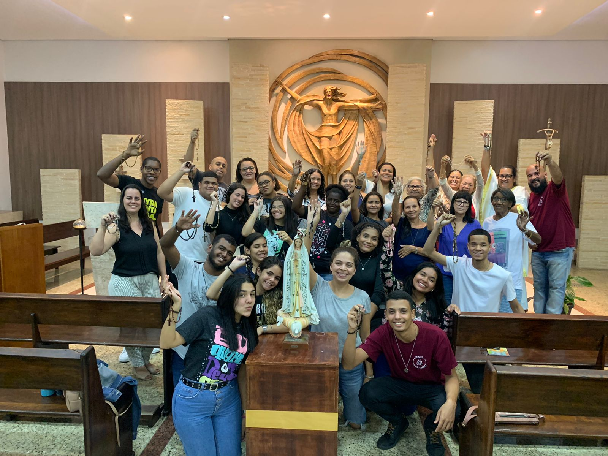

As Vocações
Sacerdotal
Chamados a servir como pastores do povo de Deus, celebrando os sacramentos e anunciando o Evangelho.
Vida Religiosa
Homens e mulheres consagrados que seguem Cristo em comunidade, com votos de pobreza, castidade e obediência.

Matrimonial
Casais que vivem o amor de Cristo em suas famílias, sendo testemunhas do amor fiel e fecundo de Deus.

Vocação Laical
Leigos e leigas que vivem sua fé no mundo, sendo presença transformadora nas realidades do dia a dia.